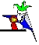

Populatie genetica
|  |
Voor dit deel is het nuttig dat je de basis van erfelijkheid kent.
Bij populatie genetica kijk je niet langer naar de individuen en wat voor nakomelingen ze zullen produceren maar kijk je naar de populatie als een geheel.i Een populatie is een groep van vogels die op een of andere manier afgescheiden zijn van de rest van de soort. Populatie genetica is de studie van de verdeling en evolutie van erfelijke eigenschappen in een populatie. We zijn dus niet langer geïnteresseerd in de erfelijke eigenschappen van één vogel. Er zijn veel artikels over erfelijkheid. Meestal gaan deze artikels over de vererving van de verschillende kleuren. Onze grasparkiet is in de eerste plaats een postuurvogel. Eigenschappen zoals grootte, vederlengte, ... vererven echter op het eerste gezicht niet volgens die eenvoudige regels van Mendel. Dit deel probeert via populatie genetica uit te leggen hoe die Mendelse erfelijkheid belangrijk is bij selectie.
Het Hardy & Weinberg evenwicht voor populaties is een mooie startpunt voor populatie genetica.
http://